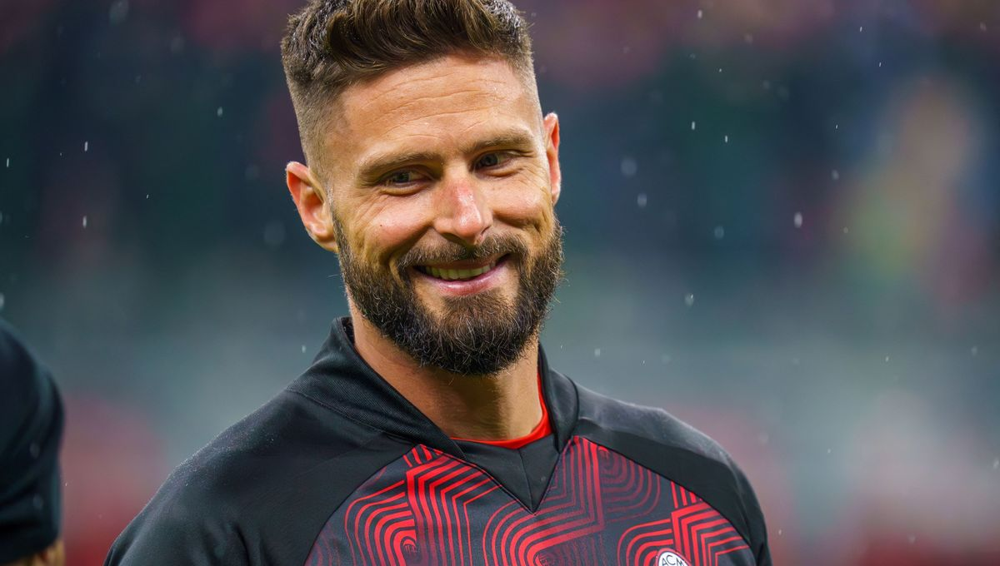

Olivier Giroud, première recrue du projet saoudien à Guingamp
Publié le 16 janvier 2025 - Par Kyrian Le Laodou

Il n'auras pas fallu longtemps pour voir la première recrue de la nouvelle direction saoudien en terre bretonne, ce jeudi le meilleur buteur de l'histoire de l'équipe de France à parapher son contrat pour 2 saisons avec l'En Avant Guingamp.
La pièce manquante pour la montée
Après un début de saison prometteur, les rouges et noir espèrent parvenir à décrocher la montée au terme de la saison avec leur nouvel avant-centre.
Les nouveaux actionnaires majoritaire Mohammed Al-Shaïby et Yuff Markazyl avait annoncés cibler une grosse recrue cette hiver, nous savons désormais qu'il s'agissait de l'ancien international français.
Un dernier challenge pour moi
La légende française s'est dites ravis de sa signature
"Je cherchais un dernier challenge à accomplir avant de terminer ma carrière, l'EAG m'a toujours attiré et je veux remonter le club en Ligue 1", a déclaré Olivier Giroud après sa signature.
Après un passage raté au Los Angeles FC, la question de la titularisation d'Olivier Giroud se pose contre la formation Rodezienne vendredi.
Statistiques d'Olivier Giroud au LAFC
- Titularisation : 30
- Buts : 5
- Passes décisives : 2
La formation costarmoricaine affronte Rodez le vendredi 17 Janvier au Roudourou à 20h